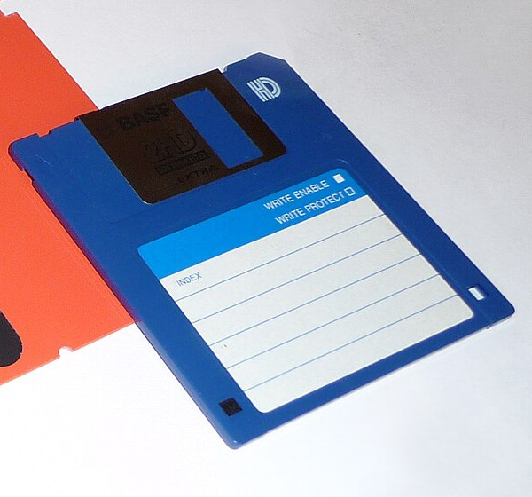
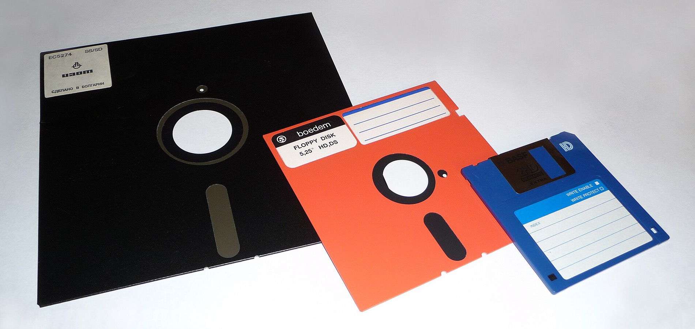

Dig up

lost files.
Exhume opens 1980s DOS floppy images in your browser and brings deleted files back, as far as the disk allows.
or try a demo disk
Opens .img .ima .vfd .flp .dsk, raw floppy images up to 2.88 MB.
Drop one anywhere on the page. Nothing leaves your computer.
Drop one anywhere on the page. Nothing leaves your computer.
CHAPTER1.WSAlive_RAFT1.WSRecoveredCHAPTER2.WSAlive_RAFT2.WSPartly backCHAPTER3.WSAliveREADME.TXTAlive
No disk? Open one of ours.
Three floppies written for the demo. Pick one and the graveyard below is read live, in this page.
WRITER DEMO6 files · 2 deleted
CHAPTER1.WSWordStar, read as Markdown

From 8 to 3½ inches.
Any DOS floppy image with a FAT12 file system, from 160 KB to 2.88 MB.
Files from 1989, readable today.
WordStar becomes Markdown.
Bold, underline and soft hyphens come through; the printer codes do not.
Chapter One: The Morning Crossing
Marta Voss opened the ticket office at half past five, when the harbor was still gray and the gulls had not yet started their daily argument. The stove was cold. The kettle was dented.
Marta Voss opened the ticket office at half past five, when the harbor was still gray and the gulls had not yet started their daily argument. The stove was cold. The kettle was dented.
CHAPTER1.WS from the writer's disk, as Exhume shows it.
dBase III becomes CSV.
Field names, dates and accented names intact, ready for any spreadsheet.
| CUSTNO | NAME | CITY | SINCE | BALANCE |
|---|---|---|---|---|
| 1001 | Marguerite Oakhollow | Lantern Bay | 1987-03-12 | 1250.00 |
| 1003 | Renée Waterford | Pinéhaven | 1988-01-19 | 0.00 |
| 1004 | Tallow & Wick Chandlers | Ellis Narrows | 1988-08-30 | 412.75 |
| 1008 | Dolores Núñez-Hale | Pinéhaven | 1989-09-01 | 175.25 |
CUSTOMER.DBF from the small-business disk.
PCX becomes PNG.
Paintbrush pictures decoded pixel for pixel, palette and all.
LOGO.PCX, 64 × 40 pixels, shown at seven times its size.